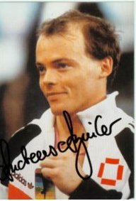

Andreas Aguilar (FRG)
1989 World R Champion

Medal Total
European Championships:
2 Bronze
World Championships: 1 Gold
Andreas was born on January 26, 1962, in Barcelona.
Competition Results
1982
FRG-SUI Dual Meet: 6th AA
1983
American Cup: 17th AA (prelims)
Hungarian International: 2nd R
1985
Chunichi Cup: 12th AA, 8th R
European Championships: 32nd AA, 7th R
Hungarian International: 1st R
Tokyo Cup: 3rd R, 5th PB, 6th HB
University Games: 37th AA
World Championships: 6th Team, 36th AA (prelims), 5th R
1986
Cottbus International: 3rd R
DTB Cup: 13th AA
FRG Championships: 5th AA
FRG Cup: 1st R
FRG-USSR Dual Meet: 2nd Team, 5th AA
1987
Chunichi Cup: 15th AA, 2nd R, 7th HB, 8th PB
DTB Cup: 7th AA, 2nd R, 4th PB
European Championships: 8th AA, 3rd R, 6th PB
University Games: 17th AA
USA-FRG Dual Meet: 1st AA
World Championships: 8th Team, 27th AA, 5th R, 7th PB
1988
Olympic Games: 12th Team
1989
Bangerter Memorial: 5th AA
European Championships: 33rd AA, 3rd R
Lyss International: 5th AA, 2nd R, 3rd PB
World Championships: 10th Team, 67th AA (prelims), 1st R
1991
World Professional Championships: 1st R
This page was created on September
12, 2004 and was last updated on January 31, 2021.
© Gymn Forum